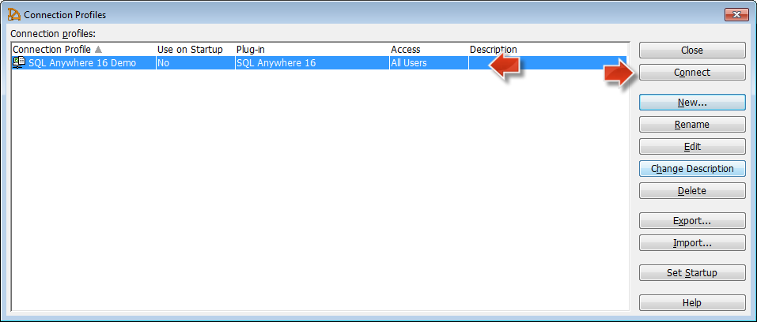
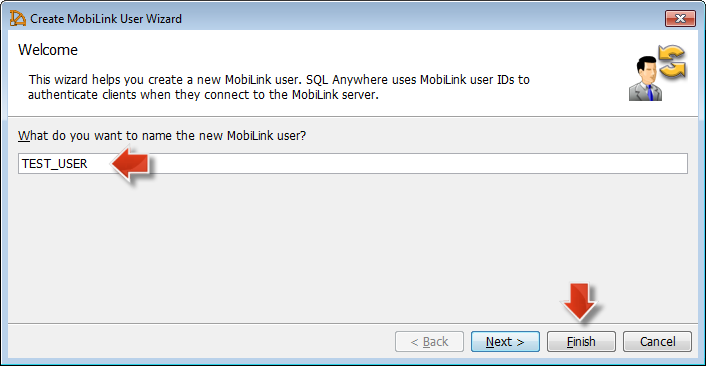
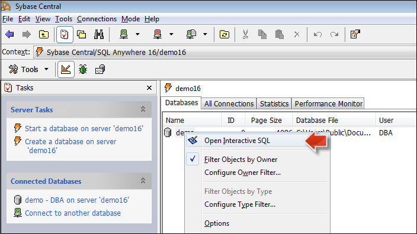
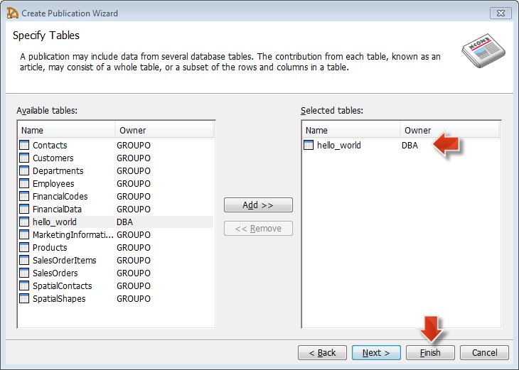
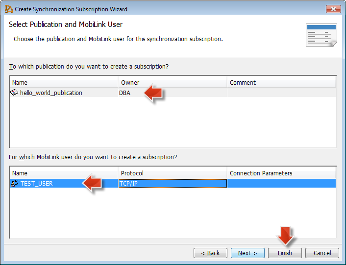
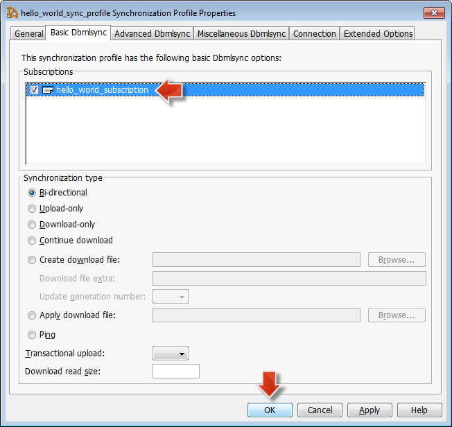
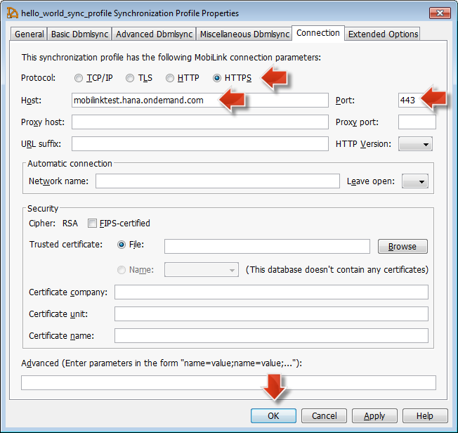
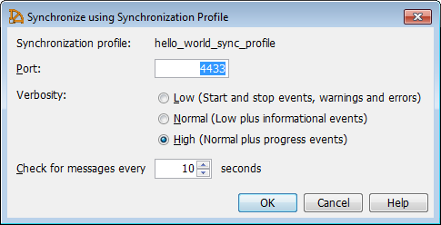

Developing Client-Initiated Synchronization
Prerequisites
- An SQL Anywhere version 16 installation is available on the client side. For more information, see Getting Access to the Remote Data Sync Service.
- A MobiLink server is running in your account. For more information, see Provisioning a MobiLink Server in Your Account.
Context
This page provides a simple example that demonstrates how to synchronize data from a remote
SQL Anywhere database into the SAP HANA database, using the Remote Data Sync service
and the underlying SQL Anywhere MobiLink technology. For more information on
MobiLink synchronizations, see Quick start to MobiLink (Synchronization) .
.
Tip The SQL Anywhere database running on the client side is called remote
database. The central SAP HANA database running on SAP Cloud Platform is called consolidated database.
Procedure
1. Connect to a local database
This demo database will be used as a source for the synchronization.
- Start Sybase Central.
- From the top-level menu, choose
 Connections
Connections  Connection Profiles SQL Anywhere 16 Demo
Connection Profiles SQL Anywhere 16 Demo  profile.
profile. - Choose Connect.

2. Create a new user
- In Sybase Central, double-click MobiLink Users.
- From the context menu, choose New MobiLink User .
- Enter a user name, for example TEST_USER, and choose Finish.
- Choose the Back button in the toolbar menu to get back to the root task level.

3. Create a new table in the remote database
- In Sybase Central, goto Database Design Tasks .
- Open the context menu above the tabs and choose Open Interactive SQL.
- Execute the following script: Sample Code
CREATE TABLE hello_world ( pkey BIGINT NOT NULL, first_name VARCHAR ( 10 ) DEFAULT '' NOT NULL, last_name VARCHAR ( 10 ) DEFAULT '' NOT NULL, PRIMARY KEY ( pkey ) );

4. Create a publication
- In Sybase Central, double-click Publications.
- From the context menu, select New Publication .
- Enter hello_world_publication as the name and choose Next.
- Leave the publication type Log scan and choose Next.
- Select the hello_world table and choose Finish.
- Choose the Back button in the toolbar menu to get back to the root task level.

5. Create a synchronization subscription
- In Sybase Central, double-click Synchronization Subscriptions.
- From the context menu, select New Subscription .
- Enter hello_world_subscription as the name and choose v1 as the script version.
- Select hello_world_publication and TEST_USER, and choose Finish.
- Choose the Back button in the toolbar menu to get back to the root task level.

6. Create a synchronization profile
- In Sybase Central, double-click Synchronization Profiles.
- From the context menu, select New Synchronization Profile .
- Enter hello_world_sync_profile as the name.
- Skip the comment wizard and choose Finish.
- In the new Synchronization Profile Properties view, select hello_world_subscription and choose OK.
- Set the script version number for Synchronization Profile in the Extended Options tab and choose OK.
- Choose the Back button in the toolbar menu to get back to the root task level.

7. Connect the MobiLink client to the MobiLink server
- In Sybase Central, double-click Synchronization Profiles.
- Select hello_world_sync_profile, and from its context menu, choose Properties.
- Go to the Connection tab.
- Fill in the connection details of the MobiLink server as described below:
- Protocol: HTTPS
- Host: URL to the MobiLink server. To see this URL, open the cockpit and navigate to Java Applications. From the list of applications, select the MobiLink server (NOTE: as of today, it appears as a Java application), and then copy the Application URL for the application shown in the Application Details view.
- Port: 443
- Proxy host: define your local proxy host, if available
- Proxy port: define your local proxy port, if available
- Choose OK.
- Choose the Back button in the toolbar menu to get back to the root task level.

8. Insert sample data in the hello_world table
- In Sybase Central, select the demo database.
- From its context menu, choose Open Interactive SQL.
- Execute the following script: Sample Code
insert into hello_world (pkey, first_name, last_name) values (50, 'John', 'Miller');' insert into hello_world (pkey, first_name, last_name) values (52, 'Olivia', 'Snider');
- Choose the Back button in the toolbar menu to get back to the root task level.
9. Run a synchronization
- In Sybase Central, double-click Synchronization Profiles.
- Select hello_world_sync_profile, and from its context menu, choose Synchronize and then OK.
- Check for errors in the synchronization output. The lines will be colored in red if there is an sync failure.
- Use SAP HANA Studio to validate that the data from the remote database has been synchronized into the consolidated SAP HANA database.
- Choose the Back button in the Sybase Central toolbar menu to get back to the root task level.

Next Steps